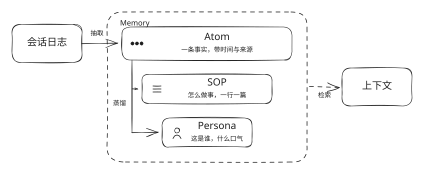
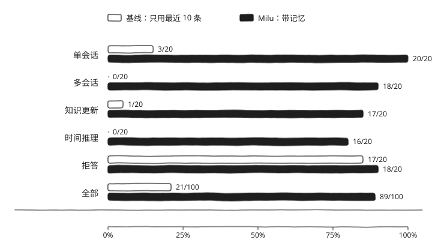
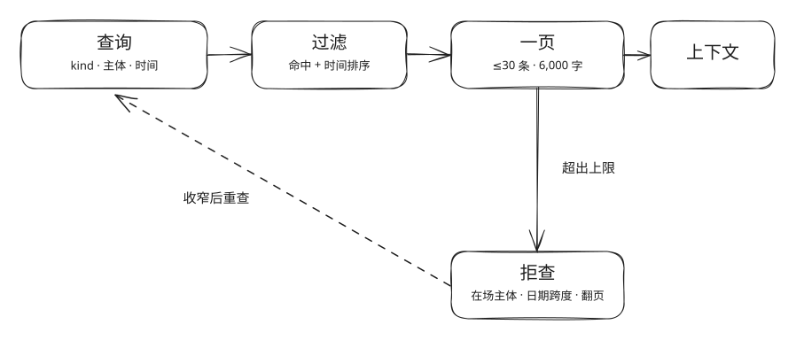

01 · 定义
记忆系统是什么
Agent 记忆系统从 agent 与用户的互动里取知识，把知识结构化地存下来，再以上下文的形式交还回去，让下一轮回答好一点。
公式里这三项就是记忆系统的三个部分：源数据、结构化数据、检索。
S 是源数据，互动留下的原始记录：消息、工具调用与返回、上传的文件，以及接入的邮件、日历、工单等外部内容。多数应用把它存成只追加的事件表或消息表，每条带 id、时间戳和会话 id，先全量落盘，之后再处理。
D 是结构化数据，从源数据里抽出的、能被程序检查的知识：事实、实体、偏好、待办和发生过的事件。常见形式有几种：关系表、用户画像的键值对、JSON 文档、图数据库的点边，也有把「文本块 + 元数据」放进向量库的。形状由 schema 决定，写侧负责去重与合并冲突。
Q 是检索，给定当前问题，从结构化数据里挑出一小段，按 token 预算放回上下文，需要细节时再回看源数据。常见实现有 SQL 过滤、全文检索、向量相似度加元数据过滤，或者混合后再 rerank；输出是按相关度或时间排序的一小段。
三项互相牵制：源留得越全，抽取越贵，检索也越难挑。产品之间的差别，大多在这三处的取舍上。
然而对话一长，源只增不减，结构越抽越多，检索却要在更多东西里挑出更短的一段。这套做法还能撑多久？
02 · 动机
为什么需要记忆系统
对话会越来越长，模型这一侧的两个限制不会跟着放宽：上下文是固定的 token 数，注意力也是有限的资源。塞进去的内容越多，模型在长上下文里找到那一条具体事实的能力反而越弱。记录可以无限增长，这两样不能。
记忆系统的必要性就落在这处不对称上。它把随时间增长的历史挪到窗口之外，需要时只放回一小段；不这么做，对话一过窗口，最早的内容连同里面的信息会一起消失。
记忆系统的用处可以归成三件事。
一是克制地记录互动。它不搬运整段对话，只留下之后还会用到的部分：做过什么决定、改到哪一步、哪些约束仍然有效。记录有边界，条数、长度、时间都有上限，也有出处，能指回原始消息。
标准定得太紧，重要的事就再也找不回来；定得太松，记录会退化成第二份对话记录，读不动也查不快。记什么、留多久、以什么形状留，是第一个要权衡的地方。
二是把重复的做法沉淀成方法。同一类任务做过几次，步骤、判断点和踩过的坑就稳定下来，可以写成一份流程。下次遇到同类任务，agent 不必重新摸索，也能预判下一步往哪走。
抽象程度得挑：抽得太细，换个项目就不适用；抽得太粗，执行时还得重新摸索。方法一旦写死，错的做法也会跟着变成惯例，所以它还得能改。
三是记住偏好。语气、篇幅、常用工具、不喜欢的做法，说一次就该生效，不用每轮重申。麻烦在于偏好会变，也会被单次情绪带偏：记老了会冒犯，记少了要反复确认，记太宽又会盖过具体场合的要求。偏好记准了，同样的输出不用反复调试，agent 才谈得上好用。
三处都没有标准答案。记录宽一点会占地，方法具体一点会过时，偏好记全一点会僵化。剩下的事是在三处各挑一个位置：留什么、抽到多细、记到什么程度。
03 · 设计
如何设计记忆系统
Milu 用三层来各管一件事：Atom 记互动，SOP 记方法，Persona 记偏好。

3.1 Atom
先要定的是记什么。
多数记忆系统用的是 RAG：把对话切片、算向量、按相似度取回，比如 Mem0。
- 写得不准。该记的偏好和长期事实可能漏掉，琐碎信息反而留下；换个说法，抽取结果也可能不同。重复与矛盾的记忆仍会留下：先「住在上海」、后「搬到北京」，系统要花时间和语境才判断得出这是更新还是冲突，重复的那份还一直占着上下文。
- 改得不清楚。新事实可能新增、合并或改写旧记忆，用户看不出改了什么、旧事实是否还有效、系统为什么这么处理。
- 取回了什么，说不清。检索返回了哪些记忆、为什么认为它们相关、回答最终用了哪些证据，都不一定透明。
Milu 的做法是从对话里整理出带 kind 的结构化记录，每条挂一层 metadata：能回溯原文，也能按它归类、整理。
kind 怎么分，直接决定后面检索和归纳顺不顺手，所以要先定下来。
Milu 只留六类，每一类对应一种场景。
| kind | 场景 |
|---|---|
attribute |
稳定的属性，比如设备系统、居住城市、通勤时长 |
event |
一次发生的事，比如买了什么、参加了什么活动、发布一版 |
reference |
别人给的、以后还要用的东西，比如清单、地址、配置 |
preference |
对某类情境的取舍，比如回复要短、晚上不排会 |
instruction |
长期规则，比如提交前必须跑检查 |
update |
旧值换成新值，比如换了工作、改了常用语言 |
这六类各自对应一种不单独存就会丢、或者会混的情况。
attribute：把不随时间变化的属性和发生的事分开。否则「通勤 40 分钟」会被反复记成事件，越积越多。event：必须带发生时间，才能回答「上个月买了几次」这类统计。没有它，购买和参与只能折进偏好或摘要，之后就数不出来。reference：指向别人给的东西，比如清单、地址、配置。它有来源、会过期，和用户自己的事实不是一回事。preference：带方向和场合。「回复要短」只在某些场景成立，缺了场合就会变成硬规则。instruction：和偏好分开，因为它是约束，不是倾向；违反要算错，不是「不太喜欢」。update：记录替换关系，让当前值唯一。没有它，同一个属性会同时挂着几个「有效」的值。
Milu 的体会是，事无巨细地记并不划算：类目越多，写错和漏标的机会越多。决定记什么的同时，也在决定舍弃什么。
decision与issue：本质是带结果的事件，并进event，不再单列。scene：曾经作为一层做聚合，后来删掉；聚合结果说不清来自哪几条互动，也没法校验，改由 SOP 与 Persona 从 atom 蒸馏。task：属于会话过程，不是长期记忆，存下来只是待办列表的副本。emotion：单次情绪不可靠，容易把一次抱怨误判成偏好。summary：一次性文本，不能校验也不能更新，正是 RAG 那条路。
按这套结构实现之后，Milu 在 LongMemEval 的 15 题采样上，判题通过率从 26.7% 提升到 46.7%。对照组只保留最近 10 条消息，两组看同样的窗口、同样的模型。提升集中在知识更新和多会话；时间推理两边都是 0/3，这一项没有解决；该说不知道的时候仍然说不知道。

除此之外，atom 上还挂着一层 metadata：来源消息的编号、事件发生的时间、写入时间，以及它属于哪一类。这层信息不参与检索排序，但让每条结论都能回溯：点开一条 atom，能看到它由哪几条消息支撑。
举个日常的例子。用户在杭州工作时聊过自己的通勤，两年后说起公司把他调去了上海。库里不会把「杭州」抹掉，而是留下一条
update：旧值杭州、新值上海，变更时间是后来那次对话。点开这条
atom，能看到它挂着的两条来源消息，一条是当年的入职闲聊，一条是这次的调动说明；哪一天发现城市判断错了，顺着编号回去读原文，就能改回来。
3.2 SOP
atom 的记录是离散的：一条对着一个时刻、一件事，回答「发生过什么」很合适，回答「这类任务一般怎么做」就不够了。同一类任务做过几次，才能看出哪些步骤固定、哪里要判断、哪一步最容易出错。这层总结得再做一次。
SOP 就是这次总结的产物：从若干条 atom 里抽出可复用的流程，写成一篇文档。它不替代 atom：先把方法摆出来，细节回 atom 里找。
文档的章节固定为五节，每一节各管一段职责。
Purpose：这份流程解决什么问题，读完这一段就知道该不该往下看。When：一句话说明什么请求该用它，也是索引里常驻的那一行。Procedure：编号步骤，一步一个动作；判断点写成「若…则…」，检查点写成「确认…」。Checklist：执行前后要确认的事项，防住「步骤都做了，结果没验证」。Pitfalls：踩过的坑，最多 5 条；这一节决定下一次能不能少走弯路。
章节之外还有几条硬约束：标题至多 24 字，When 一句话至多 80 字，Procedure 至少两步，证据至多 30 条；正文每一步都要引用证据里的 atom
编号，落不到任何 atom 上的步骤会被拒绝。
SOP 也有上限：20 篇。索引一行一篇、常驻在上下文里，篇数再多，光索引就要占掉一块预算。
3.3 Persona
persona 同样是从 atom 里再收一次，只是对象从任务换成了人。atom 里散着「回复别太长」「晚上别排会」「别用表情」这类碎片，单看一条只说明某一次偏好；要让 agent 知道「这个人希望被怎样对待」，得把它们合到一页上。
收出来的是一页文档，只从偏好、指令和角色类的 atom 里取料，其余细节留在 atom 层按需召回。它只回答一个问题：接下来该怎么和他说话。
文档只有两节，各自管一件事。
- 关系：谁在用、通常怎么协作、有哪些长期约束，至多 4 行。
- 口味：界面偏好与工作节奏，至多 6 行，其中界面与节奏各至多 3 行。
每一行都要注明来自哪条 atom，带上编号和日期；属于别处的内容不写，比如绝对路径、提交编号、任务进度、分支状态。落不到 atom 上的话，宁可删掉。
为了每轮都能进上下文，persona 限 1,200 字。写不下只能删，留下的就是会影响行为的那部分。
3.4 检索
三层都建好之后，最后一个问题是每一轮到底取什么进来。窗口有限，全塞进去等于没有检索；取错了，前面的结构再整齐也白搭。

atom 的取法是结构化过滤：按种类、主体与属性、时间区间、字面词组合查询，按命中与时间排序，一次返回一页。上限写在工具里：一次最多 30 条，单条细节 400 字，一次回答 6,000 字；超出直接拒查，并给出在场的主体、日期跨度和翻页建议，让模型自己把查询收窄。
读取方是一个会改写查询的模型，不是一个只查一次的搜索框，所以字面匹配比相似度更合适：它能预测「换个词会怎样」，收窄建议把「查不到」变成「下一次怎么查」。这两件事相似度分数给不了。代价是召回偏保守。
结果里还有两条规矩：被取代的记录默认隐藏，一条更新读起来是当前的一个值；同一个主体和属性有多个活值、中间又没有更新链时，回答会说出来，而不是挑一个。
常驻的部分更简单。SOP 只放一行一篇的索引，正文按需翻页；persona 整页随提示注入，带一个内容指纹，完全相同的提醒不会注入两次，变化过的则一定注入。压缩之后全部重新注入，因为压缩把原来的消息收起来了。
窗口预算可以写成一行加法。
压缩时按覆盖范围选档位。全量覆盖时，摘要里写「更早的消息已归档到长期记忆」，再加至多十条摘要，末尾一句「需要细节就回忆」；只覆盖一部分时，切到覆盖索引之前的最后一个用户轮次，其余原样保留；没有覆盖时，退回最近的一问一答，并说明日志里还有其余部分。十条摘要按价值排序：三条留给最近的事件，其余按更新、偏好、指令、属性、参考排。
三层共享同一份 atom，上层必须引用下层，所以每条结论都能回到原文核对。上限也写在各层里：六类 atom、20 篇 SOP、一页 1,200 字的 persona。留什么、留多少，都是设计时定死的，不留给模型临场发挥。
Notes · 01 · Memory ← 返回 Milu